Daniel series — 25 illustrated Shorts (preview)
Preview only, not posted anywhere. Pastor David G. Kincer. Refactored to the 60s+, don't-skip-sin and include-context rules; audit passages restored.
Success in Tragedies Part 1
Daniel: What built the results?
Our short summary of this clip, not the preacher's exact words
Short answer: The great results in Daniel’s life grew out of character, not only famous prayers. Pastor Kincer says we miss the character that brought those results.
Why: He notes we celebrate that Daniel “purposed not to defile himself,” yet overlook that under siege he never dropped out of following God.
“You see, we never look at this part of Daniel.”
▶ 23:27
“We don't see the character of Daniel that brought the great results in his life.”
▶ 23:34
“Daniel didn't drop out of education and he never dropped out of following God.”
▶ 24:04
Daniel 1:8 But Daniel purposed in his heart that he would not defile himself with the portion of the king’s meat, nor with the wine which he drank: therefore he requested of the prince of the eunuchs that he might not defile himself.


Other title options:
- Daniel: Is character the missing piece?
- Daniel: What do we skip past?
YouTube description (draft)
Daniel: What built the results? Read the short answer, the Scripture (NKJV) and the pastor's own words: https://growonthevine.com/clips/daniel-what-built-the-results/ To see the full message, click here: https://www.youtube.com/watch?v=pNWWSCyAUs0&t=1395s The great results in Daniel’s life grew out of character, not only famous prayers. Pastor Kincer says we miss the character that brought those results. Daniel 1:8 (NKJV) Pastor David G. Kincer · Grow on the Vine Music: "Resolutions Scott Buckley" Kevin MacLeod (incompetech.com) Licensed under Creative Commons: By Attribution 4.0 License http://creativecommons.org/licenses/by/4.0/ #Shorts #Bible #Jesus
Daniel: How did he get there, and is America under siege?
Our short summary of this clip, not the preacher's exact words
Short answer: Daniel’s fiery-furnace and lions’-den moments rest on earlier character. Pastor Kincer says most people zip over Daniel 1, but the Scriptures were written for our learning. He says America is under siege, not by an army but by philosophies: 2% of the population are homosexuals with a powerful voice undermining the Scriptures, and atheists team up with homosexuals, socialists and hedonists to destroy the Bible, alongside evolution science with no proof.
Why: He opens with the lions’ den and fiery furnace, then asks how Daniel got to where God used him — pointing to chapter 1 and Romans 15:4.
“We hear a lot about the book of Daniel. We hear about the lions' den. We hear about the fiery furnace.”
▶ 0:01
“But have you ever really thought about how Daniel got to the place where God used him?”
▶ 0:17
“all things that were written up before time of were written for our learning.”
▶ 0:40
“America is under siege. Not by an army right now. But by philosophies.”
▶ 4:26
“In America now, 2% of the population are homosexuals and they have a very powerful voice destroying the Bible, the scriptures, and undermining them in America.”
▶ 4:44
“Then you got the atheist who team up with the homosexuals and the socialists and the hedonists to destroy the Bible, to destroy Christ.”
▶ 6:34
Romans 15:4 For whatever things were written before were written for our learning, that we through the patience and comfort of the Scriptures might have hope.


Other title options:
- Daniel: How did he get there?
- Daniel: Who is undermining the Bible?
YouTube description (draft)
Daniel: How did he get there, and is America under siege? Read the short answer, the Scripture (NKJV) and the pastor's own words: https://growonthevine.com/clips/daniel-how-did-he-get-there/ To see the full message, click here: https://www.youtube.com/watch?v=pNWWSCyAUs0&t=0s Daniel’s fiery-furnace and lions’-den moments rest on earlier character. Pastor Kincer says most people zip over Daniel 1, but the Scriptures were written for our learning. He says America is under siege, not by an army but by philosophies: 2% of the population are homosexuals with a powerful voice undermining the Scriptures, and atheists team up with homosexuals, socialists and hedonists to destroy the Bible, alongside evolution science with no proof. Romans 15:4 (NKJV) Pastor David G. Kincer · Grow on the Vine Music: "Wholesome" Kevin MacLeod (incompetech.com) Licensed under Creative Commons: By Attribution 4.0 License http://creativecommons.org/licenses/by/4.0/ #Shorts #Bible #Jesus
Daniel: Is the church in America defiling itself?
Our short summary of this clip, not the preacher's exact words
Short answer: He says barely 52% voted that marriage is between a man and a woman though most Americans say they believe in God and are Catholic or Protestant. The church in America is defiling itself by not following God, and you can't preach on TV or radio that homosexuality is wrong or they take you off the air.
Why: Daniel purposed in his heart that he would not defile himself (Daniel 1:8).
“Barely 52% agreed that a marriage is only between a man and a woman.”
▶ 12:20
“The church in America is defiling itself by not following the things of God.”
▶ 13:05
“You can't preach on TV or radio that homosexuality is wrong. Or they will take you off the air.”
▶ 13:12
Daniel 1:8 But Daniel purposed in his heart that he would not defile himself with the portion of the king’s meat, nor with the wine which he drank: therefore he requested of the prince of the eunuchs that he might not defile himself.


Other title options:
- Daniel: Why did only 52% vote for marriage?
- Daniel: Can you preach that sin is wrong on TV?
YouTube description (draft)
Daniel: Is the church in America defiling itself? Read the short answer, the Scripture (NKJV) and the pastor's own words: https://growonthevine.com/clips/daniel-is-the-church-defiling-itself/ To see the full message, click here: https://www.youtube.com/watch?v=pNWWSCyAUs0&t=735s He says barely 52% voted that marriage is between a man and a woman though most Americans say they believe in God and are Catholic or Protestant. The church in America is defiling itself by not following God, and you can't preach on TV or radio that homosexuality is wrong or they take you off the air. Daniel 1:8 (NKJV) Pastor David G. Kincer · Grow on the Vine Music: "Windswept" Kevin MacLeod (incompetech.com) Licensed under Creative Commons: By Attribution 4.0 License http://creativecommons.org/licenses/by/4.0/ #Shorts #Bible #Jesus
Daniel: What was done to Daniel, and is it happening here?
Our short summary of this clip, not the preacher's exact words
Short answer: He says Daniel was led away captive, made a slave and made a eunuch, forced to change his sexual orientation, and asks if that is happening in America as homosexuals get into public schools pressuring young people to accept homosexuality and transvestism. Wanting Daniel’s miracles without his tragedies misses the point. Pastor Kincer says we want the fire and the lions’ den without the loss that came first.
Why: He lists what Daniel lost — job, home, parents, freedom — then asks “Now, you want to be a Daniel?” and reminds us Jesus promised tribulation.
“He lost everything. He lost his freedom. Now, you want to be a Daniel?”
▶ 18:34
“We just want to be people that can go through the fire and people that go into the lion's den without any of this other stuff.”
▶ 18:48
“Jesus said in this world you will have tribulation. Be of good cheer, I've overcome the world.”
▶ 19:16
“He was forced to change his sexual orientation. Are you there? Is that happening in America?”
▶ 17:00
John 16:33 These things I have spoken to you, that in Me you may have peace. In the world you will have tribulation; but be of good cheer, I have overcome the world.”


Other title options:
- Daniel: Do you want to be like Daniel?
- Daniel: Was Daniel made a eunuch?
YouTube description (draft)
Daniel: What was done to Daniel, and is it happening here? Read the short answer, the Scripture (NKJV) and the pastor's own words: https://growonthevine.com/clips/daniel-do-you-want-to-be/ To see the full message, click here: https://www.youtube.com/watch?v=pNWWSCyAUs0&t=1005s He says Daniel was led away captive, made a slave and made a eunuch, forced to change his sexual orientation, and asks if that is happening in America as homosexuals get into public schools pressuring young people to accept homosexuality and transvestism. Wanting Daniel’s miracles without his tragedies misses the point. Pastor Kincer says we want the fire and the lions’ den without the loss that came first. John 16:33 (NKJV) Pastor David G. Kincer · Grow on the Vine Music: "Dreamer" Kevin MacLeod (incompetech.com) Licensed under Creative Commons: By Attribution 4.0 License http://creativecommons.org/licenses/by/4.0/ #Shorts #Bible #Jesus
Daniel: Why did Daniel never complain or blame?
Our short summary of this clip, not the preacher's exact words
Short answer: He says in America we blame everything: Republicans blame Democrats, Catholics blame Protestants, all of them blame the cults. Daniel, Shadrach, Meshach, and Abednego lost nation, rights, and freedom — and yet they never complained. Pastor Kincer says that is why God used them.
Why: He contrasts their quiet faithfulness — school, temple, serving God — with others who moaned and blamed God in the same tragedy.
“And here the righteous lost their nation, their possession, their rights, their freedom along with the unrighteous.”
▶ 25:23
“Daniel, and Shadrach, Meshach, and Abednego were castrated. And yet, they never complained.”
▶ 25:32
“No wonder they were used to God, wouldn't you say?”
▶ 25:51
“You know, in the church world, the Catholics blame the Protestants, Protestants blame the Catholics. All of them blame the cults.”
▶ 20:16
Philippians 2:14-15 Do all things without complaining and disputing, that you may become blameless and harmless, children of God without fault in the midst of a crooked and perverse generation, among whom you shine as lights in the world,
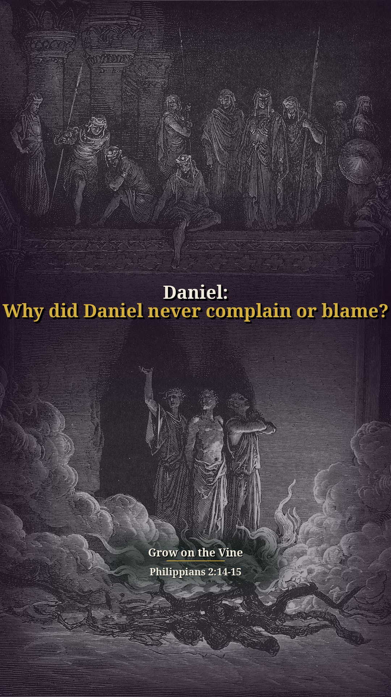
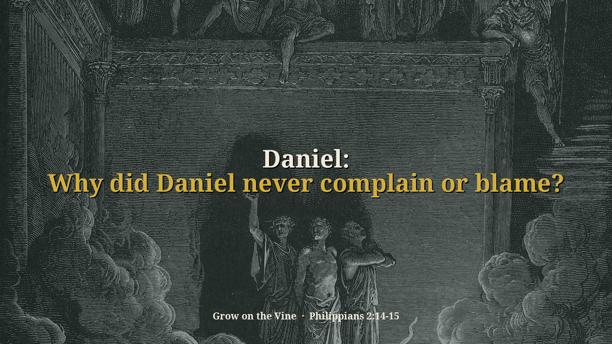
Other title options:
- Daniel: Why never complain?
- Daniel: Do we blame everything?
YouTube description (draft)
Daniel: Why did Daniel never complain or blame? Read the short answer, the Scripture (NKJV) and the pastor's own words: https://growonthevine.com/clips/daniel-why-never-complain/ To see the full message, click here: https://www.youtube.com/watch?v=pNWWSCyAUs0&t=1207s He says in America we blame everything: Republicans blame Democrats, Catholics blame Protestants, all of them blame the cults. Daniel, Shadrach, Meshach, and Abednego lost nation, rights, and freedom — and yet they never complained. Pastor Kincer says that is why God used them. Philippians 2:14-15 (NKJV) Pastor David G. Kincer · Grow on the Vine Music: "Touching Moments Two Higher" Kevin MacLeod (incompetech.com) Licensed under Creative Commons: By Attribution 4.0 License http://creativecommons.org/licenses/by/4.0/ #Shorts #Bible #Jesus
Success in Tragedies Part 2
Daniel: Would you keep the little things?
Our short summary of this clip, not the preacher's exact words
Short answer: Yes — Daniel refused even a “minor” defilement from the king’s food because God had said no. Pastor Kincer says they weren’t asking him to steal; he still kept the little thing.
Why: He explains the food had likely been offered to idols, and ties Daniel’s purpose to Jesus’ word about keeping the least of the commandments.
“Now Daniel purposed not to defile himself with the portion of the king's meat or wine.”
▶ 12:59
“It was a minor thing. Daniel kept it.”
▶ 14:05
“Didn't Jesus say, "They that keep the least of these commandments"?”
▶ 14:33
Daniel 1:8 But Daniel purposed in his heart that he would not defile himself with the portion of the king’s meat, nor with the wine which he drank: therefore he requested of the prince of the eunuchs that he might not defile himself.
Matthew 5:19 Whoever therefore breaks one of the least of these commandments, and teaches men so, shall be called least in the kingdom of heaven; but whoever does and teaches them, he shall be called great in the kingdom of heaven.


Other title options:
- Daniel: Does a small “no” matter?
- Daniel: What if the test looks minor?
YouTube description (draft)
Daniel: Would you keep the little things? Read the short answer, the Scripture (NKJV) and the pastor's own words: https://growonthevine.com/clips/daniel-would-you-keep-the-little-things/ To see the full message, click here: https://www.youtube.com/watch?v=Kry7LWfO39Y&t=819s Yes — Daniel refused even a “minor” defilement from the king’s food because God had said no. Pastor Kincer says they weren’t asking him to steal; he still kept the little thing. Daniel 1:8 (NKJV) Pastor David G. Kincer · Grow on the Vine Music: "Faith In Tomorrow" Kevin MacLeod (incompetech.com) Licensed under Creative Commons: By Attribution 4.0 License http://creativecommons.org/licenses/by/4.0/ #Shorts #Bible #Jesus
Daniel: Would you spare your enemy?
Our short summary of this clip, not the preacher's exact words
Short answer: Daniel cared that the keeper who enslaved him would not die for his stand. Pastor Kincer calls that character — and God honored it so both lived and Daniel stayed undefiled.
Why: After ten days they looked healthier than those who ate the king’s meat. God backed Daniel’s principle.
“This Daniel's got character, folks. He cares about others. And this is his enemy.”
▶ 16:14
“he doesn't want him to die for some principle of God.”
▶ 16:32
“God backed it up.”
▶ 17:06
Daniel 1:12-15 “Please test your servants for ten days, and let them give us vegetables to eat and water to drink. Then let our appearance be examined before you, and the appearance of the young men who eat the portion of the king’s delicacies; and as you see fit, so deal with your servants.” So he consented with them in this matter, and tested them ten days. And at the end of ten days their features appeared better and fatter in flesh than all the young men who ate the portion of the king’s delicacies.


Other title options:
- Daniel: Does obedience include kindness?
- Daniel: What does character look like?
YouTube description (draft)
Daniel: Would you spare your enemy? Read the short answer, the Scripture (NKJV) and the pastor's own words: https://growonthevine.com/clips/daniel-would-you-spare-your-enemy/ To see the full message, click here: https://www.youtube.com/watch?v=Kry7LWfO39Y&t=973s Daniel cared that the keeper who enslaved him would not die for his stand. Pastor Kincer calls that character — and God honored it so both lived and Daniel stayed undefiled. Daniel 1:12-15 (NKJV) Pastor David G. Kincer · Grow on the Vine Music: "Clean Soul" Kevin MacLeod (incompetech.com) Licensed under Creative Commons: By Attribution 4.0 License http://creativecommons.org/licenses/by/4.0/ #Shorts #Bible #Jesus
Daniel: What was the reward, and when do visions come?
Our short summary of this clip, not the preacher's exact words
Short answer: God gave them knowledge, skill, learning, and wisdom — ten times better than the rest — and Daniel understanding in visions and dreams. Daniel did not leave Judah already seeing dreams and visions. Pastor Kincer says he received them when he purposed to obey God even in a little thing.
Why: The gift followed commitment and a good attitude under pressure — not the other way around.
“Now, you want health? Follow God, even the least of the commandments.”
▶ 17:10
“All of them had knowledge and skill and learning and wisdom. 10 times better than the rest of it.”
▶ 17:36
“But Daniel had understanding in all visions and all dreams.”
▶ 17:45
“It's when he purposed to keep a good attitude, when he purposed even in a little thing to obey God”
▶ 17:55
“He didn't come out of Judah with dreams and visions.”
▶ 18:09
“He got it when he showed his commitment to God.”
▶ 18:14
Daniel 1:17-20 As for these four young men, God gave them knowledge and skill in all literature and wisdom; and Daniel had understanding in all visions and dreams. Now at the end of the days, when the king had said that they should be brought in, the chief of the eunuchs brought them in before Nebuchadnezzar. Then the king interviewed them, and among them all none was found like Daniel, Hananiah, Mishael, and Azariah; therefore they served before the king. And in all matters of wisdom and understanding about which the king examined them, he found them ten times better than all the magicians and astrologers who were in all his realm.
Daniel 1:17 As for these four young men, God gave them knowledge and skill in all literature and wisdom; and Daniel had understanding in all visions and dreams.
Amos 3:7 Surely the Lord God does nothing, Unless He reveals His secret to His servants the prophets.
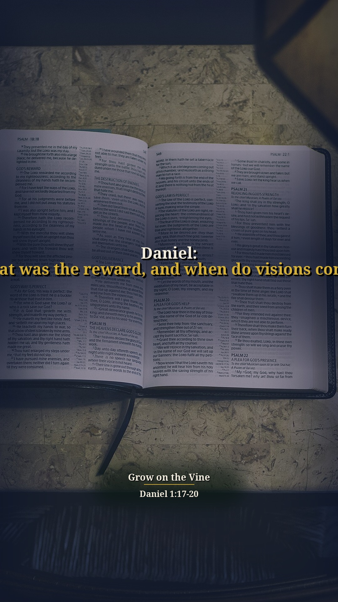
Other title options:
- Daniel: What was the reward?
- Daniel: When do the visions come?
YouTube description (draft)
Daniel: What was the reward, and when do visions come? Read the short answer, the Scripture (NKJV) and the pastor's own words: https://growonthevine.com/clips/daniel-what-was-the-reward/ To see the full message, click here: https://www.youtube.com/watch?v=Kry7LWfO39Y&t=1029s God gave them knowledge, skill, learning, and wisdom — ten times better than the rest — and Daniel understanding in visions and dreams. Daniel did not leave Judah already seeing dreams and visions. Pastor Kincer says he received them when he purposed to obey God even in a little thing. Daniel 1:17-20 (NKJV) Pastor David G. Kincer · Grow on the Vine Music: "Inspired" Kevin MacLeod (incompetech.com) Licensed under Creative Commons: By Attribution 4.0 License http://creativecommons.org/licenses/by/4.0/ #Shorts #Bible #Jesus
War of the Wise Part 1
Daniel: Who can reveal secrets?
Our short summary of this clip, not the preacher's exact words
Short answer: Even Babylon’s intellectuals admitted only a God whose dwelling is not with men could reveal the secret. Pastor Kincer says they acknowledged a supernatural God in heaven.
Why: Daniel and the three Hebrews were swept into the death sentence as royal counselors — yet the Chaldeans themselves confessed no idol-god or occult power could do what the king asked.
“he includes Daniel and the three Hebrew children in this death sentence”
▶ 5:04
“except the gods whose dwelling is not with men.”
▶ 5:42
“They're acknowledging that there is a God in heaven, there is a supernatural God.”
▶ 5:45
Daniel 2:11 It is a difficult thing that the king requests, and there is no other who can tell it to the king except the gods, whose dwelling is not with flesh.”
Daniel 2:28 But there is a God in heaven who reveals secrets, and He has made known to King Nebuchadnezzar what will be in the latter days. Your dream, and the visions of your head upon your bed, were these:
Other title options:
- Daniel: Is there a God in heaven?
- Daniel: What did the wise men admit?
YouTube description (draft)
Daniel: Who can reveal secrets? Read the short answer, the Scripture (NKJV) and the pastor's own words: https://growonthevine.com/clips/daniel-who-can-reveal-secrets/ To see the full message, click here: https://www.youtube.com/watch?v=M0PKQYTTstU&t=326s Even Babylon’s intellectuals admitted only a God whose dwelling is not with men could reveal the secret. Pastor Kincer says they acknowledged a supernatural God in heaven. Daniel 2:11 (NKJV) Pastor David G. Kincer · Grow on the Vine Music: "Meditation Impromptu 01" Kevin MacLeod (incompetech.com) Licensed under Creative Commons: By Attribution 4.0 License http://creativecommons.org/licenses/by/4.0/ #Shorts #Bible #Jesus
Daniel: Does it still pay to serve God?
Our short summary of this clip, not the preacher's exact words
Short answer: He says it was a war between the occult and intellectuals versus four young Hebrews; God's people had lost everything and it looked like it didn't pay to serve God. America is in that season: Jesus is put down by comedians, atheists and actors and the Bible laughed at, but if we watch what God did in Daniel we will know what He can do in America.
Why: God corrects His people and confronts the unbeliever; He changes the times and the seasons (Daniel 2:21).
“It's a war between the occult and intellectual versus four young Hebrew Jews.”
▶ 0:01
“It looks like it does not pay to serve God.”
▶ 1:21
“Now, this is the season we are in in America. It looks as though the church in America is losing the war of righteousness.”
▶ 2:06
“And if we can watch what God does in the midst of this condition in Daniel, we will know what God can do in the future of America.”
▶ 2:38
Daniel 2:21 And He changes the times and the seasons; He removes kings and raises up kings; He gives wisdom to the wise And knowledge to those who have understanding.


Other title options:
- Daniel: Is the church losing the war of righteousness?
- Daniel: What will God do for America?
YouTube description (draft)
Daniel: Does it still pay to serve God? Read the short answer, the Scripture (NKJV) and the pastor's own words: https://growonthevine.com/clips/daniel-does-it-pay-to-serve-god/ To see the full message, click here: https://www.youtube.com/watch?v=M0PKQYTTstU&t=1s He says it was a war between the occult and intellectuals versus four young Hebrews; God's people had lost everything and it looked like it didn't pay to serve God. America is in that season: Jesus is put down by comedians, atheists and actors and the Bible laughed at, but if we watch what God did in Daniel we will know what He can do in America. Daniel 2:21 (NKJV) Pastor David G. Kincer · Grow on the Vine Music: "Windswept" Kevin MacLeod (incompetech.com) Licensed under Creative Commons: By Attribution 4.0 License http://creativecommons.org/licenses/by/4.0/ #Shorts #Bible #Jesus
Daniel: Can astrologers and sorcerers save you?
Our short summary of this clip, not the preacher's exact words
Short answer: Babylon’s wisest counselors could not tell the king his forgotten dream. Pastor Kincer says God started turning things around by exposing empty wisdom. He explains the astrologers read the stars and the zodiac as people do today, necromancers talk with the spirits of the dead, sorcerers cast spells and some are demonically influenced, and the Chaldeans were the secular intellectuals.
Why: Nebuchadnezzar demanded both dream and interpretation; when the magicians and Chaldeans could not, he sentenced them to die as phonies.
“God starts turning things around. And he starts by giving King Nebuchadnezzar a troubled dream”
▶ 3:11
“You guys, you tell me my dream.”
▶ 3:40
“you're phonies, you're all going to die.”
▶ 4:04
“These astrologers, they describe things with the stars of heaven and how they line up. The positions of the planet in relation to the zodiac and people do that today.”
▶ 4:11
“The sorcerers, the witchcraft people, they cast spells and use enchantments and some of them can be demonically influenced.”
▶ 4:36
Daniel 2:10-11 The Chaldeans answered the king, and said, “There is not a man on earth who can tell the king’s matter; therefore no king, lord, or ruler has ever asked such things of any magician, astrologer, or Chaldean. It is a difficult thing that the king requests, and there is no other who can tell it to the king except the gods, whose dwelling is not with flesh.”


Other title options:
- Daniel: Can wise men save you?
- Daniel: What are astrologers, necromancers and sorcerers?
YouTube description (draft)
Daniel: Can astrologers and sorcerers save you? Read the short answer, the Scripture (NKJV) and the pastor's own words: https://growonthevine.com/clips/daniel-can-wise-men-save-you/ To see the full message, click here: https://www.youtube.com/watch?v=M0PKQYTTstU&t=190s Babylon’s wisest counselors could not tell the king his forgotten dream. Pastor Kincer says God started turning things around by exposing empty wisdom. He explains the astrologers read the stars and the zodiac as people do today, necromancers talk with the spirits of the dead, sorcerers cast spells and some are demonically influenced, and the Chaldeans were the secular intellectuals. Daniel 2:10-11 (NKJV) Pastor David G. Kincer · Grow on the Vine Music: "Simple Duet" Kevin MacLeod (incompetech.com) Licensed under Creative Commons: By Attribution 4.0 License http://creativecommons.org/licenses/by/4.0/ #Shorts #Bible #Jesus
Daniel: Where does wisdom come from, and who raises up kings?
Our short summary of this clip, not the preacher's exact words
Short answer: Wisdom and might belong to God. Pastor Kincer says you will not get that strength at the university or in high school — you get it from Him and His word. God removes and raises up kings. Pastor Kincer says change starts with us — if His people humble themselves, pray, seek His face, and turn from wicked ways.
Why: Daniel’s revelation is that God changes times and seasons and gives leaders according to how people live; 2 Chronicles 7:14 is the path back.
“Wisdom and might are his. Wisdom and might, strength, belong to God.”
▶ 8:33
“You're not going to get it at the universities. You're not going to get it in high school.”
▶ 8:50
“You're going to get it from him and his word.”
▶ 8:55
“Daniel's revelation is God changes times and seasons. You hang in there.”
▶ 10:24
“Number three, he removes and raises up kings.”
▶ 10:32
“If my people will humble themselves and pray and seek my face and turn, repent from their wicked ways”
▶ 11:13
Daniel 2:20-21 Daniel answered and said: “Blessed be the name of God forever and ever, For wisdom and might are His. And He changes the times and the seasons; He removes kings and raises up kings; He gives wisdom to the wise And knowledge to those who have understanding.
Daniel 2:21 And He changes the times and the seasons; He removes kings and raises up kings; He gives wisdom to the wise And knowledge to those who have understanding.
2 Chronicles 7:14 if My people who are called by My name will humble themselves, and pray and seek My face, and turn from their wicked ways, then I will hear from heaven, and will forgive their sin and heal their land.


Other title options:
- Daniel: Who raises up kings?
- Daniel: Where does wisdom come from?
YouTube description (draft)
Daniel: Where does wisdom come from, and who raises up kings? Read the short answer, the Scripture (NKJV) and the pastor's own words: https://growonthevine.com/clips/daniel-who-raises-up-kings/ To see the full message, click here: https://www.youtube.com/watch?v=M0PKQYTTstU&t=508s Wisdom and might belong to God. Pastor Kincer says you will not get that strength at the university or in high school — you get it from Him and His word. God removes and raises up kings. Pastor Kincer says change starts with us — if His people humble themselves, pray, seek His face, and turn from wicked ways. Daniel 2:20-21 (NKJV) Pastor David G. Kincer · Grow on the Vine Music: "Morning" Kevin MacLeod (incompetech.com) Licensed under Creative Commons: By Attribution 4.0 License http://creativecommons.org/licenses/by/4.0/ #Shorts #Bible #Jesus
War of the Wise Part 2
Daniel: Who is the God of gods?
Our short summary of this clip, not the preacher's exact words
Short answer: Nebuchadnezzar confessed, “Your God is a God of gods and a Lord of kings.” Pastor Kincer says the king got instructed — then made Daniel and his friends rulers.
Why: After the dream’s interpretation, the king promoted Daniel over the wise men and set Shadrach, Meshach, and Abednego over Babylon’s affairs.
“Of a truth, that your God is a God of gods and a lord of kings.”
▶ 20:56
“He made Daniel a great man... ruler over the whole province of Babylon”
▶ 21:32
“he set Shadrach, Meshach, and Abednego over the affairs of the province of Babylon”
▶ 21:47
Daniel 2:47-49 The king answered Daniel, and said, “Truly your God is the God of gods, the Lord of kings, and a revealer of secrets, since you could reveal this secret.” Then the king promoted Daniel and gave him many great gifts; and he made him ruler over the whole province of Babylon, and chief administrator over all the wise men of Babylon. Also Daniel petitioned the king, and he set Shadrach, Meshach, and Abed-Nego over the affairs of the province of Babylon; but Daniel sat in the gate of the king.


Other title options:
- Daniel: What did the king finally admit?
- Daniel: Can a pagan king learn?
YouTube description (draft)
Daniel: Who is the God of gods? Read the short answer, the Scripture (NKJV) and the pastor's own words: https://growonthevine.com/clips/daniel-who-is-the-god-of-gods/ To see the full message, click here: https://www.youtube.com/watch?v=ZbUUKlFepUo&t=1255s Nebuchadnezzar confessed, “Your God is a God of gods and a Lord of kings.” Pastor Kincer says the king got instructed — then made Daniel and his friends rulers. Daniel 2:47 (NKJV) Pastor David G. Kincer · Grow on the Vine Music: "Enchanted Journey" Kevin MacLeod (incompetech.com) Licensed under Creative Commons: By Attribution 4.0 License http://creativecommons.org/licenses/by/4.0/ #Shorts #Bible #Jesus
Daniel: Can four change a king?
Our short summary of this clip, not the preacher's exact words
Short answer: Yes. Pastor Kincer says four young followers of God impacted the pagan king of Babylon until he admitted their God was the real God.
Why: It looked bleak; Daniel paid the price with the unrighteous, yet without complaining he waited while God changed the seasons.
“It looked bleak in Daniel's time.”
▶ 22:01
“he didn't complain, he didn't blame, he didn't attack.”
▶ 22:11
“These four young followers of God... impacted the pagan king of Babylon to declare that Daniel's God was the real God.”
▶ 22:25
Daniel 2:47 The king answered Daniel, and said, “Truly your God is the God of gods, the Lord of kings, and a revealer of secrets, since you could reveal this secret.”
Daniel 1:8 But Daniel purposed in his heart that he would not defile himself with the portion of the king’s meat, nor with the wine which he drank: therefore he requested of the prince of the eunuchs that he might not defile himself.
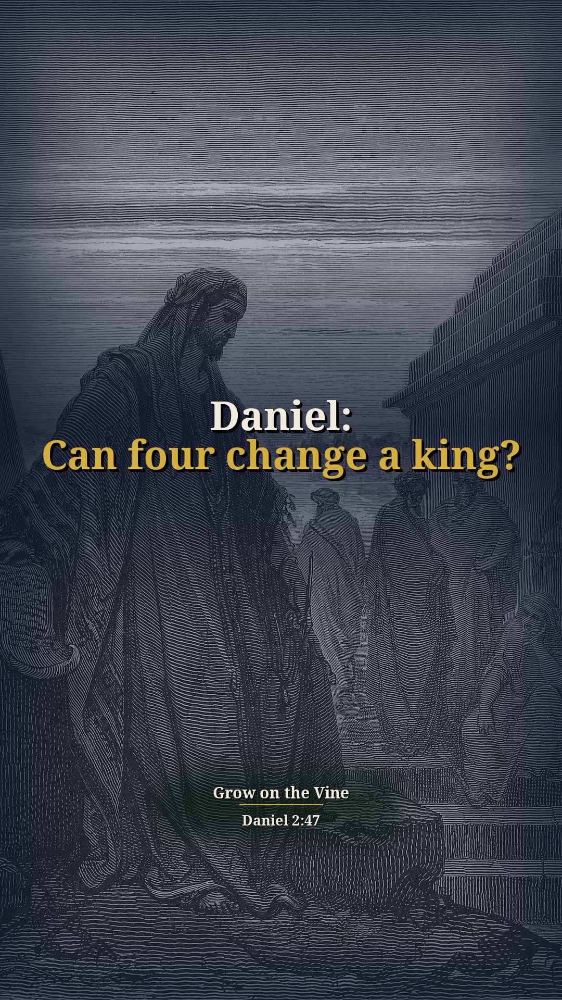
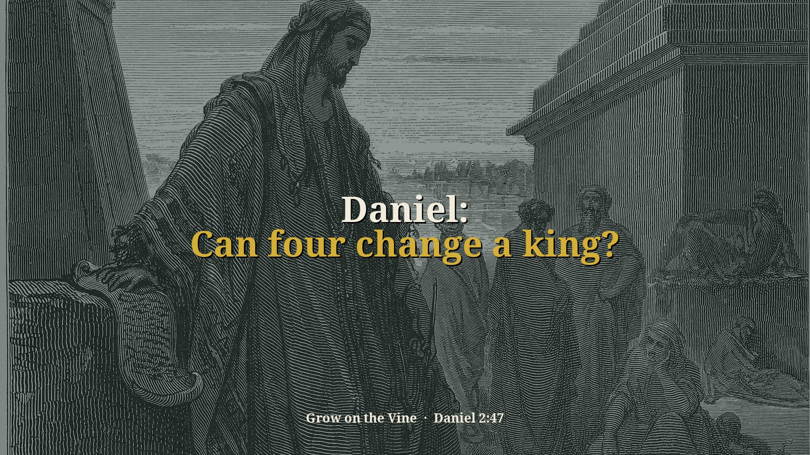
Other title options:
- Daniel: What if it still looks bleak?
- Daniel: Does character still speak?
YouTube description (draft)
Daniel: Can four change a king? Read the short answer, the Scripture (NKJV) and the pastor's own words: https://growonthevine.com/clips/daniel-can-four-change-a-king/ To see the full message, click here: https://www.youtube.com/watch?v=ZbUUKlFepUo&t=1320s Yes. Pastor Kincer says four young followers of God impacted the pagan king of Babylon until he admitted their God was the real God. Daniel 2:47 (NKJV) Pastor David G. Kincer · Grow on the Vine Music: "Stoic Morning" Kevin MacLeod (incompetech.com) Licensed under Creative Commons: By Attribution 4.0 License http://creativecommons.org/licenses/by/4.0/ #Shorts #Bible #Jesus
Daniel: Is there an answer, and will God visit again?
Our short summary of this clip, not the preacher's exact words
Short answer: Yes — His name is Jesus. Pastor Kincer says if we humble ourselves, pray, seek His face, and turn from our wicked ways, He will heal the church and America. Yes. Pastor Kincer says it pays to serve Jesus, and like Joseph’s word “God will truly visit you,” God will visit His church again — this is not over.
Why: He refuses an escape-only hope; he expects God to move, restore the church, and draw unbelievers in another visitation.
“there's no answer for America, and there's no answer for the church. Yes, there is. His name is Jesus”
▶ 24:42
“if we will humble ourselves and pray and seek his face and turn from our wicked ways, he will hear”
▶ 24:49
“Just be an everyday normal Christian, and God will honor it.”
▶ 25:09
“It pays to serve Jesus Christ, folks.”
▶ 25:40
“But God will truly visit you.”
▶ 26:05
“God will visit His church again. This thing ain't over.”
▶ 26:45
2 Chronicles 7:14 if My people who are called by My name will humble themselves, and pray and seek My face, and turn from their wicked ways, then I will hear from heaven, and will forgive their sin and heal their land.
Genesis 50:24 And Joseph said to his brethren, “I am dying; but God will surely visit you, and bring you out of this land to the land of which He swore to Abraham, to Isaac, and to Jacob.”
1 Kings 2:2-3 “I go the way of all the earth; be strong, therefore, and prove yourself a man. And keep the charge of the Lord your God: to walk in His ways, to keep His statutes, His commandments, His judgments, and His testimonies, as it is written in the Law of Moses, that you may prosper in all that you do and wherever you turn;


Other title options:
- Daniel: Is there an answer?
- Daniel: Will God visit again?
YouTube description (draft)
Daniel: Is there an answer, and will God visit again? Read the short answer, the Scripture (NKJV) and the pastor's own words: https://growonthevine.com/clips/daniel-will-god-visit-again/ To see the full message, click here: https://www.youtube.com/watch?v=ZbUUKlFepUo&t=1479s Yes — His name is Jesus. Pastor Kincer says if we humble ourselves, pray, seek His face, and turn from our wicked ways, He will heal the church and America. Yes. Pastor Kincer says it pays to serve Jesus, and like Joseph’s word “God will truly visit you,” God will visit His church again — this is not over. 2 Chronicles 7:14 (NKJV) Pastor David G. Kincer · Grow on the Vine Music: "Jesu Joy Of Mans Desiring" Kevin MacLeod (incompetech.com) Licensed under Creative Commons: By Attribution 4.0 License http://creativecommons.org/licenses/by/4.0/ #Shorts #Bible #Jesus
Civil Disobedience Part 1
Daniel: Would you bow to the idol?
Our short summary of this clip, not the preacher's exact words
Short answer: Shadrach, Meshach, and Abednego would not. When asked if it was true they would not bow, they said yes — they would not worship the king’s image.
Why: Pastor Kincer walks Daniel 3: the king in a rage brings them in and offers one more chance to fall down and worship or be cast into the furnace.
“Is it true, Shadrach, Meshach, and Abednego ... you will not bow down and worship the image that I made?”
▶ 14:10
“Yep, it's true. We haven't been worshiping your gods, and we ain't bound down to your idols.”
▶ 15:00
“if you won't fall down right now and worship the image, I'm going to cast you into the furnace of fire.”
▶ 15:10
Daniel 3:14-18 Nebuchadnezzar spoke, saying to them, “Is it true, Shadrach, Meshach, and Abed-Nego, that you do not serve my gods or worship the gold image which I have set up? Now if you are ready at the time you hear the sound of the horn, flute, harp, lyre, and psaltery, in symphony with all kinds of music, and you fall down and worship the image which I have made, good! But if you do not worship, you shall be cast immediately into the midst of a burning fiery furnace. And who is the god who will deliver you from my hands?” Shadrach, Meshach, and Abed-Nego answered and said to the king, “O Nebuchadnezzar, we have no need to answer you in this matter. If that is the case, our God whom we serve is able to deliver us from the burning fiery furnace, and He will deliver us from your hand, O king. But if not, let it be known to you, O king, that we do not serve your gods, nor will we worship the gold image which you have set up.”


Other title options:
- Daniel: What if the law demands worship?
- Daniel: Will you stand when others bend?
YouTube description (draft)
Daniel: Would you bow to the idol? Read the short answer, the Scripture (NKJV) and the pastor's own words: https://growonthevine.com/clips/daniel-would-you-bow/ To see the full message, click here: https://www.youtube.com/watch?v=7G8z7P7I4Qk&t=843s Shadrach, Meshach, and Abednego would not. When asked if it was true they would not bow, they said yes — they would not worship the king’s image. Daniel 3:14-18 (NKJV) Pastor David G. Kincer · Grow on the Vine Music: "Sapphire Isle" Kevin MacLeod (incompetech.com) Licensed under Creative Commons: By Attribution 4.0 License http://creativecommons.org/licenses/by/4.0/ #Shorts #Bible #Jesus
Daniel: What is civil disobedience?
Our short summary of this clip, not the preacher's exact words
Short answer: Their reply is civil disobedience: they told the king they did not need an attorney, prophet, or prayer line — they already knew they would not bow.
Why: Pastor Kincer frames Daniel 3 as the challenge when civil authorities make laws immoral compared to Scripture.
“Their reply is simply civil disobedience.”
▶ 19:35
“we are not careful ... We don't need an attorney to answer you.”
▶ 19:45
“If it be so, ... he is able to deliver us from the fiery furnace.”
▶ 20:32
Acts 5:29 But Peter and the other apostles answered and said: “We ought to obey God rather than men.
Daniel 3:16-18 Shadrach, Meshach, and Abed-Nego answered and said to the king, “O Nebuchadnezzar, we have no need to answer you in this matter. If that is the case, our God whom we serve is able to deliver us from the burning fiery furnace, and He will deliver us from your hand, O king. But if not, let it be known to you, O king, that we do not serve your gods, nor will we worship the gold image which you have set up.”


Other title options:
- Daniel: When must you disobey?
- Daniel: Who answers the king?
YouTube description (draft)
Daniel: What is civil disobedience? Read the short answer, the Scripture (NKJV) and the pastor's own words: https://growonthevine.com/clips/daniel-what-is-civil-disobedience/ To see the full message, click here: https://www.youtube.com/watch?v=7G8z7P7I4Qk&t=1174s Their reply is civil disobedience: they told the king they did not need an attorney, prophet, or prayer line — they already knew they would not bow. Acts 5:29 (NKJV) Pastor David G. Kincer · Grow on the Vine Music: "Windswept" Kevin MacLeod (incompetech.com) Licensed under Creative Commons: By Attribution 4.0 License http://creativecommons.org/licenses/by/4.0/ #Shorts #Bible #Jesus
Daniel: Is our God able to change things?
Our short summary of this clip, not the preacher's exact words
Short answer: He says if God cannot intervene in the affairs of men and change America and the church, we would be serving a worthless God, just like the Hindus and Buddhists; but he is not serving a worthless God. Like the three Hebrews, God is able, and even if not, we will not bow.
Why: Daniel 3:17–18: "our God whom we serve is able to deliver us... But if not... we do not serve your gods."
“If it be so, our God whom we serve is able to deliver us from the fiery furnace.”
▶ 20:40
“But if not, ... we are not serving your gods and we are not bowing to your idol.”
▶ 21:10
“Our God is able to deliver us from anything. If it's his will, he will deliver us. But if it's not his will, ... I ain't bowing.”
▶ 21:30
“If there is a God and we don't have any hope that America and the church in America can be changed, then we're serving a worthless God. Just like the Hindus are serving a worthless God, just like the Buddhists.”
▶ 1:44
“And I submit to you, I'm not serving a worthless God.”
▶ 2:11
Daniel 3:17-18 If that is the case, our God whom we serve is able to deliver us from the burning fiery furnace, and He will deliver us from your hand, O king. But if not, let it be known to you, O king, that we do not serve your gods, nor will we worship the gold image which you have set up.”
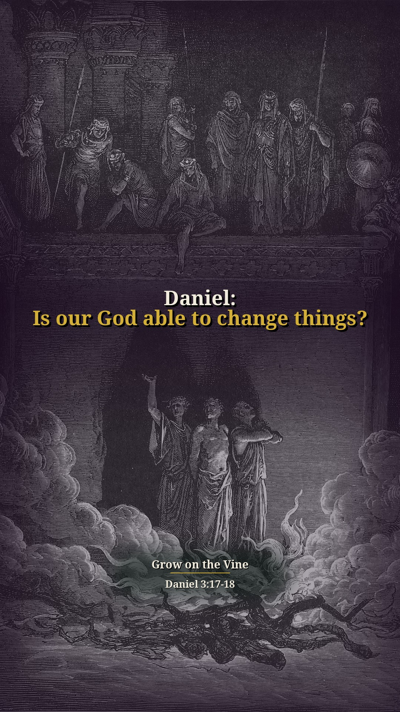
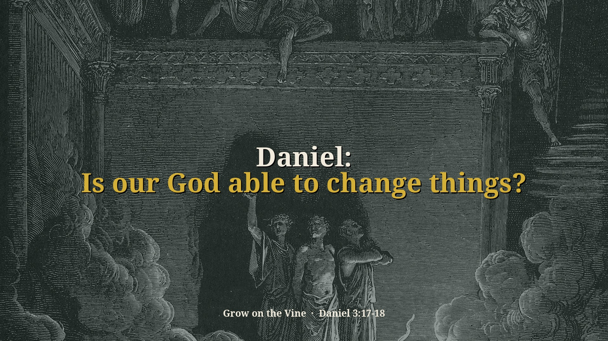
Other title options:
- Daniel: But if not?
- Daniel: Are we serving a worthless God?
YouTube description (draft)
Daniel: Is our God able to change things? Read the short answer, the Scripture (NKJV) and the pastor's own words: https://growonthevine.com/clips/daniel-is-our-god-able/ To see the full message, click here: https://www.youtube.com/watch?v=7G8z7P7I4Qk&t=100s He says if God cannot intervene in the affairs of men and change America and the church, we would be serving a worthless God, just like the Hindus and Buddhists; but he is not serving a worthless God. Like the three Hebrews, God is able, and even if not, we will not bow. Daniel 3:17-18 (NKJV) Pastor David G. Kincer · Grow on the Vine Music: "Clear Air" Kevin MacLeod (incompetech.com) Licensed under Creative Commons: By Attribution 4.0 License http://creativecommons.org/licenses/by/4.0/ #Shorts #Bible #Jesus
Daniel: Can you claim God and keep sinning?
Our short summary of this clip, not the preacher's exact words
Short answer: He says Nebuchadnezzar admitted the God of gods yet arrogantly defied Him, and presidents Clinton, Bush Jr. and Obama all said they were Christians; Clinton could commit adultery, including with young interns, and say "My religion forgives me." He adds a preacher who said all religions, even atheists and Muslims, go to heaven.
Why: Nebuchadnezzar had already acknowledged their God (Daniel 2:47), yet said "who is the god who will deliver you from my hands?" (Daniel 3:15).
“Now this is after he's already acknowledged the God of Daniel, Shadrach, and Abednego in chapter 2.”
▶ 15:30
“And yet Clinton could commit adultery with a various number of women, including young interns in the Capitol building and say this statement, "My religion forgives me."”
▶ 16:00
“They ask him, "Do all religions lead to the same God?" Yes, they do. What book are you reading?”
▶ 17:05
Daniel 3:15 Now if you are ready at the time you hear the sound of the horn, flute, harp, lyre, and psaltery, in symphony with all kinds of music, and you fall down and worship the image which I have made, good! But if you do not worship, you shall be cast immediately into the midst of a burning fiery furnace. And who is the god who will deliver you from my hands?”
Daniel 2:47 The king answered Daniel, and said, “Truly your God is the God of gods, the Lord of kings, and a revealer of secrets, since you could reveal this secret.”
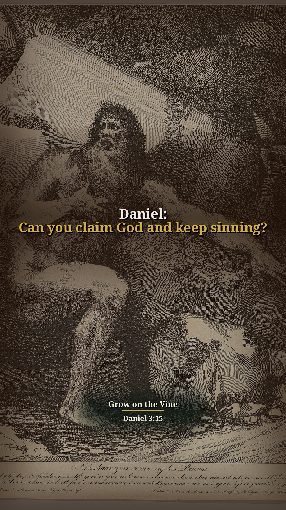
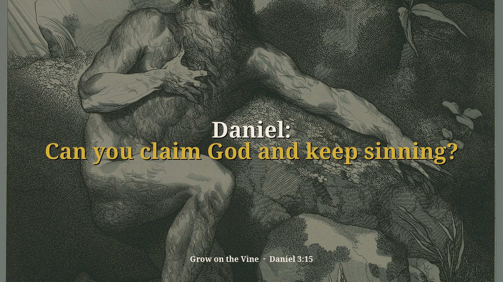
Other title options:
- Daniel: Does "my religion forgives me" work?
- Daniel: Do all religions lead to the same God?
YouTube description (draft)
Daniel: Can you claim God and keep sinning? Read the short answer, the Scripture (NKJV) and the pastor's own words: https://growonthevine.com/clips/daniel-can-you-claim-god-and-keep-sinning/ To see the full message, click here: https://www.youtube.com/watch?v=7G8z7P7I4Qk&t=926s He says Nebuchadnezzar admitted the God of gods yet arrogantly defied Him, and presidents Clinton, Bush Jr. and Obama all said they were Christians; Clinton could commit adultery, including with young interns, and say "My religion forgives me." He adds a preacher who said all religions, even atheists and Muslims, go to heaven. Daniel 3:15 (NKJV) Pastor David G. Kincer · Grow on the Vine Music: "Windswept" Kevin MacLeod (incompetech.com) Licensed under Creative Commons: By Attribution 4.0 License http://creativecommons.org/licenses/by/4.0/ #Shorts #Bible #Jesus
Daniel: Who pays for obeying evil orders?
Our short summary of this clip, not the preacher's exact words
Short answer: He says the flame killed the men who carried out the king's order, millions of Germans died carrying out Hitler's orders, thousands of Americans died in a worthless Vietnam war, and civil government forces homosexuality on the nation; over half a million have died and 50% of Americans have had a sexually transmitted disease.
Why: Daniel 3:22: the flame of the fire killed those men who took up Shadrach, Meshach, and Abednego.
“they pick them up and they throw them into the fiery furnace.”
▶ 26:25
“The flame of fire slew those men that took up Shadrach, Meshach, and Abednego.”
▶ 27:50
“for fear of losing their house or losing their job ... we won't stand up for Christ.”
▶ 27:35
“The flame of fire slew those men that took up Shadrach, Meshach, and Abednego. Millions of Germans died carrying out Hitler's orders.”
▶ 27:56
“Civil government, civil servants promotes and forces homosexuality on the nation as an acceptable lifestyle and marriage.”
▶ 28:21
“50% of Americans have had or have now a sexually transmitted disease.”
▶ 28:41
Daniel 3:19-22 Then Nebuchadnezzar was full of fury, and the expression on his face changed toward Shadrach, Meshach, and Abed-Nego. He spoke and commanded that they heat the furnace seven times more than it was usually heated. And he commanded certain mighty men of valor who were in his army to bind Shadrach, Meshach, and Abed-Nego, and cast them into the burning fiery furnace. Then these men were bound in their coats, their trousers, their turbans, and their other garments, and were cast into the midst of the burning fiery furnace. Therefore, because the king’s command was urgent, and the furnace exceedingly hot, the flame of the fire killed those men who took up Shadrach, Meshach, and Abed-Nego.
Daniel 3:22 Therefore, because the king’s command was urgent, and the furnace exceedingly hot, the flame of the fire killed those men who took up Shadrach, Meshach, and Abed-Nego.


Other title options:
- Daniel: Into the furnace
- Daniel: What happened to the men who threw them in?
YouTube description (draft)
Daniel: Who pays for obeying evil orders? Read the short answer, the Scripture (NKJV) and the pastor's own words: https://growonthevine.com/clips/daniel-into-the-furnace/ To see the full message, click here: https://www.youtube.com/watch?v=7G8z7P7I4Qk&t=1578s He says the flame killed the men who carried out the king's order, millions of Germans died carrying out Hitler's orders, thousands of Americans died in a worthless Vietnam war, and civil government forces homosexuality on the nation; over half a million have died and 50% of Americans have had a sexually transmitted disease. Daniel 3:19-22 (NKJV) Pastor David G. Kincer · Grow on the Vine Music: "Fresh Air" Kevin MacLeod (incompetech.com) Licensed under Creative Commons: By Attribution 4.0 License http://creativecommons.org/licenses/by/4.0/ #Shorts #Bible #Jesus
Civil Disobedience Part 2
Daniel: Who is the fourth man?
Our short summary of this clip, not the preacher's exact words
Short answer: The king saw four men loose in the fire, and the fourth like the Son of God. Pastor Kincer says he had a revelation of Jesus before the virgin birth.
Why: Thrown into the furnace, they were unhurt; the fourth presence is the God who can turn nations when a few people decide to do right.
“I see four men loose. I threw three in and there's four people in there walking in the midst of the fire.”
▶ 1:15
“And the fourth one is like the son of God.”
▶ 1:24
“He has a revelation of Jesus before Jesus has come and born of the virgin.”
▶ 1:34
Daniel 3:24-25 Then King Nebuchadnezzar was astonished; and he rose in haste and spoke, saying to his counselors, “Did we not cast three men bound into the midst of the fire?” They answered and said to the king, “True, O king.” “Look!” he answered, “I see four men loose, walking in the midst of the fire; and they are not hurt, and the form of the fourth is like the Son of God.”


Other title options:
- Daniel: Who walks with you in the fire?
- Daniel: Did the king see Jesus?
YouTube description (draft)
Daniel: Who is the fourth man? Read the short answer, the Scripture (NKJV) and the pastor's own words: https://growonthevine.com/clips/daniel-who-is-the-fourth-man/ To see the full message, click here: https://www.youtube.com/watch?v=zI1DI8B_gYc&t=52s The king saw four men loose in the fire, and the fourth like the Son of God. Pastor Kincer says he had a revelation of Jesus before the virgin birth. Daniel 3:24-25 (NKJV) Pastor David G. Kincer · Grow on the Vine Music: "Wholesome" Kevin MacLeod (incompetech.com) Licensed under Creative Commons: By Attribution 4.0 License http://creativecommons.org/licenses/by/4.0/ #Shorts #Bible #Jesus
Daniel: Does God promote the faithful?
Our short summary of this clip, not the preacher's exact words
Short answer: Yes. The king promoted Shadrach, Meshach, and Abednego; twice their economic loss was reversed because of their character. Pastor Kincer ties it to seeking first the kingdom.
Why: Everything was taken in captivity and again at the furnace — and God brought them up both times.
“Then the king promoted Shadrach, Meshach, and Abednego in the province of Babylon.”
▶ 7:29
“That's twice their economic problems have been changed.”
▶ 7:46
“Seek you first the kingdom of God and his righteousness, and all these things ... will be added to you.”
▶ 8:08
Daniel 3:30 Then the king promoted Shadrach, Meshach, and Abed-Nego in the province of Babylon.
Matthew 6:33 But seek first the kingdom of God and His righteousness, and all these things shall be added to you.


Other title options:
- Daniel: What if you lose the job twice?
- Daniel: Will seeking Him first still work?
YouTube description (draft)
Daniel: Does God promote the faithful? Read the short answer, the Scripture (NKJV) and the pastor's own words: https://growonthevine.com/clips/daniel-does-god-promote-the-faithful/ To see the full message, click here: https://www.youtube.com/watch?v=zI1DI8B_gYc&t=448s Yes. The king promoted Shadrach, Meshach, and Abednego; twice their economic loss was reversed because of their character. Pastor Kincer ties it to seeking first the kingdom. Matthew 6:33 (NKJV) Pastor David G. Kincer · Grow on the Vine Music: "Faith In Tomorrow" Kevin MacLeod (incompetech.com) Licensed under Creative Commons: By Attribution 4.0 License http://creativecommons.org/licenses/by/4.0/ #Shorts #Bible #Jesus
Daniel: Can fire touch you if you yield to God?
Our short summary of this clip, not the preacher's exact words
Short answer: The fire had no power: hair and clothes unsinged, no smell of fire. Pastor Kincer says God delivered His servants who trusted Him — and trust means you act. They changed the king’s word and yielded their bodies. Pastor Kincer says anyone can say “I love Jesus,” but disciplining the body to live like a believer is what changes a nation.
Why: Confession without embodied obedience will not turn a church or a country.
“the fire had no power over these men. Their hair wasn't singed, their clothing wasn't singed, and there was no smell of fire upon them.”
▶ 2:45
“And he has delivered his servants that trusted in him.”
▶ 3:48
“Trust is a bigger word than faith. Faith, you're persuaded something is right. Trust, you act on it.”
▶ 3:52
“they have changed the king's word, yielded their bodies. Say these three words. Yielded their bodies.”
▶ 4:09
“anybody can just say, "I love Jesus." Anybody can just say, "I'm a believer."”
▶ 4:17
“when you bring your body into discipline and live like a believer, that's what's going to change a nation.”
▶ 4:26
Daniel 3:27-28 And the satraps, administrators, governors, and the king’s counselors gathered together, and they saw these men on whose bodies the fire had no power; the hair of their head was not singed nor were their garments affected, and the smell of fire was not on them. Nebuchadnezzar spoke, saying, “Blessed be the God of Shadrach, Meshach, and Abed-Nego, who sent His Angel and delivered His servants who trusted in Him, and they have frustrated the king’s word, and yielded their bodies, that they should not serve nor worship any god except their own God!
Daniel 3:28 Nebuchadnezzar spoke, saying, “Blessed be the God of Shadrach, Meshach, and Abed-Nego, who sent His Angel and delivered His servants who trusted in Him, and they have frustrated the king’s word, and yielded their bodies, that they should not serve nor worship any god except their own God!
Romans 12:1 I beseech you therefore, brethren, by the mercies of God, that you present your bodies a living sacrifice, holy, acceptable to God, which is your reasonable service.
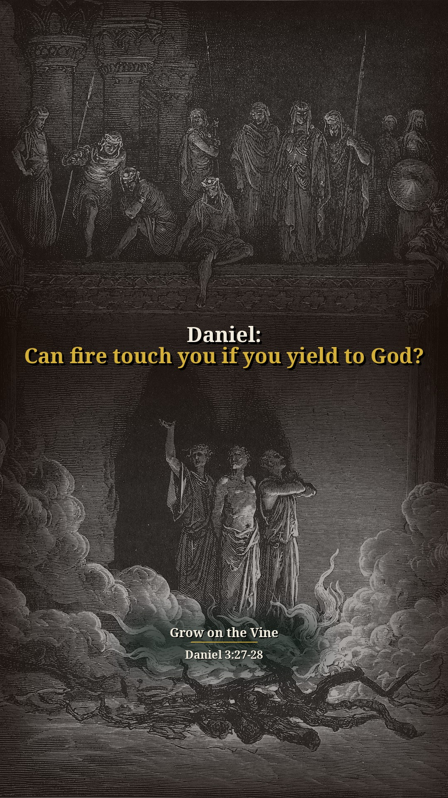
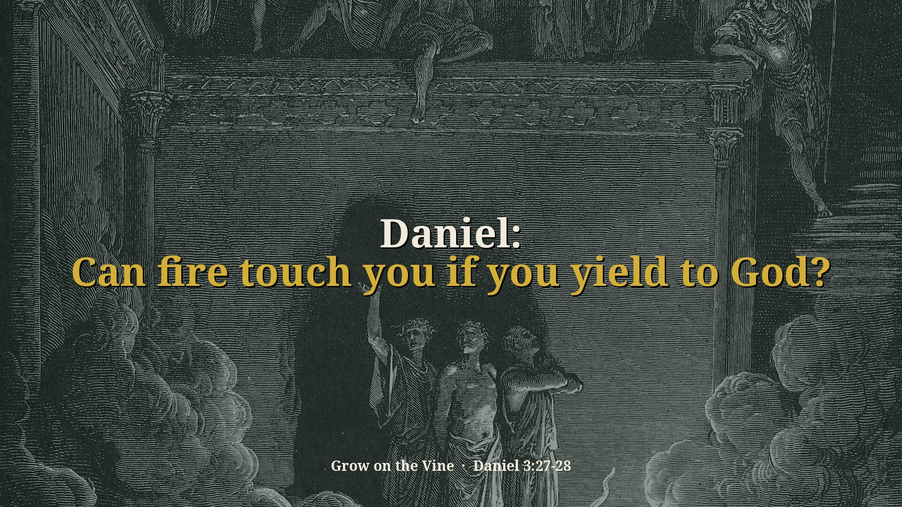
Other title options:
- Daniel: Can fire touch you?
- Daniel: Will you yield your body?
YouTube description (draft)
Daniel: Can fire touch you if you yield to God? Read the short answer, the Scripture (NKJV) and the pastor's own words: https://growonthevine.com/clips/daniel-can-fire-touch-you/ To see the full message, click here: https://www.youtube.com/watch?v=zI1DI8B_gYc&t=158s The fire had no power: hair and clothes unsinged, no smell of fire. Pastor Kincer says God delivered His servants who trusted Him — and trust means you act. They changed the king’s word and yielded their bodies. Pastor Kincer says anyone can say “I love Jesus,” but disciplining the body to live like a believer is what changes a nation. Daniel 3:27-28 (NKJV) Pastor David G. Kincer · Grow on the Vine Music: "Dreamer" Kevin MacLeod (incompetech.com) Licensed under Creative Commons: By Attribution 4.0 License http://creativecommons.org/licenses/by/4.0/ #Shorts #Bible #Jesus
Daniel: Is America under God's discipline?
Our short summary of this clip, not the preacher's exact words
Short answer: He says if you don't heed God's call there will be disciplinary action: cholera, yellow fever and the Spanish flu killed many, AIDS has killed millions worldwide and over half a million in America, and we went from three sexually transmitted diseases before 1960 to 40. After the Jesus people movement, laws changed on homosexuality and abortion, prayer was taken out, and we've been declining ever since.
Why: Nebuchadnezzar learned that those who walk in pride God is able to put down (Daniel 4:37).
“See, if you don't heed the call, there's going to be a disciplinary action.”
▶ 11:03
“AIDS have killed millions worldwide in our generation and over half a million in America.”
▶ 11:33
“Now we have 40 different sexually transmitted diseases, and several of them are incurable.”
▶ 11:56
“All these laws started changing, homosexuals and abortion and all this stuff, and Jesus not accepted in public places and prayer taken out.”
▶ 17:49
Daniel 4:37 Now I, Nebuchadnezzar, praise and extol and honor the King of heaven, all of whose works are truth, and His ways justice. And those who walk in pride He is able to put down.


Other title options:
- Daniel: Why is America declining?
- Daniel: What happens when we ignore God's call?
YouTube description (draft)
Daniel: Is America under God's discipline? Read the short answer, the Scripture (NKJV) and the pastor's own words: https://growonthevine.com/clips/daniel-why-is-america-declining/ To see the full message, click here: https://www.youtube.com/watch?v=zI1DI8B_gYc&t=663s He says if you don't heed God's call there will be disciplinary action: cholera, yellow fever and the Spanish flu killed many, AIDS has killed millions worldwide and over half a million in America, and we went from three sexually transmitted diseases before 1960 to 40. After the Jesus people movement, laws changed on homosexuality and abortion, prayer was taken out, and we've been declining ever since. Daniel 4:37 (NKJV) Pastor David G. Kincer · Grow on the Vine Music: "Windswept" Kevin MacLeod (incompetech.com) Licensed under Creative Commons: By Attribution 4.0 License http://creativecommons.org/licenses/by/4.0/ #Shorts #Bible #Jesus
Daniel: What is civil government for?
Our short summary of this clip, not the preacher's exact words
Short answer: He says civil government's purpose is to punish those that hurt others and praise those who live right, but in America we tell Christians to shut up about Jesus, take the Bible and prayer out of public schools, and speak of Muslims and Allah in a flattering way so we don't make them mad.
Why: Romans 13:3–4: rulers are not a terror to good works but to evil; he is God's minister to you for good.
“What is the purpose of civil government? To punish those that hurt others.”
▶ 25:00
“We're telling the Christians to shut up about Jesus. That's not right.”
▶ 25:19
“They will talk about Muslim and Allah all the time in a real flattering way.”
▶ 25:33
Romans 13:3-4 For rulers are not a terror to good works, but to evil. Do you want to be unafraid of the authority? Do what is good, and you will have praise from the same. For he is God’s minister to you for good. But if you do evil, be afraid; for he does not bear the sword in vain; for he is God’s minister, an avenger to execute wrath on him who practices evil.


Other title options:
- Daniel: Should Christians be told to shut up about Jesus?
- Daniel: Why is the Bible out of schools?
YouTube description (draft)
Daniel: What is civil government for? Read the short answer, the Scripture (NKJV) and the pastor's own words: https://growonthevine.com/clips/daniel-what-is-government-for/ To see the full message, click here: https://www.youtube.com/watch?v=zI1DI8B_gYc&t=1490s He says civil government's purpose is to punish those that hurt others and praise those who live right, but in America we tell Christians to shut up about Jesus, take the Bible and prayer out of public schools, and speak of Muslims and Allah in a flattering way so we don't make them mad. Romans 13:3-4 (NKJV) Pastor David G. Kincer · Grow on the Vine Music: "Windswept" Kevin MacLeod (incompetech.com) Licensed under Creative Commons: By Attribution 4.0 License http://creativecommons.org/licenses/by/4.0/ #Shorts #Bible #Jesus